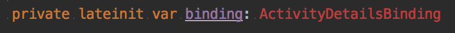
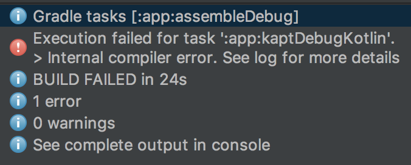

Xavier Rubio Jansana
android {
...
dataBinding {
enabled = true
}
}
apply plugin: 'kotlin-kapt'
...
dependencies {
...
kapt "com.android.databinding:compiler:2.3.0"
}
<?xml version="1.0" encoding="utf-8"?>
<layout xmlns:android="http://schemas.android.com/apk/res/android"
xmlns:app="http://schemas.android.com/apk/res-auto"
xmlns:tools="http://schemas.android.com/tools">
<data>
<variable
name="model"
type="com.xrubio.databindingexample.model.PojoActivityModel"/>
<variable ... />
</data>
<!-- Your regular layout here -->
</layout>
<TextView
android:id="@+id/message" android:id="@+id/message"
android:text="@{model.message}"
tools:text="message"
android:layout_width="wrap_content"
android:layout_height="wrap_content"
android:layout_marginBottom="16dp"
android:layout_marginEnd="16dp"
android:layout_marginStart="16dp"
android:layout_marginTop="16dp"
app:layout_constraintBottom_toBottomOf="parent"
app:layout_constraintEnd_toEndOf="parent"
app:layout_constraintStart_toStartOf="parent"
app:layout_constraintTop_toTopOf="parent"/>
class PojoModelActivity : AppCompatActivity() {
lateinit var binding: ActivityPojoModelActivityPojoModelBinding // activity_pojo_model
lateinit var model: PojoModel
override fun onCreate(savedInstanceState: Bundle?) {
super.onCreate(savedInstanceState)
binding = DataBindingUtil.setContentView(
this, R.layout.activity_pojo_model)
model = PojoModel(message = "Hello World!")
binding.model = model
}
}
data class PojoModel(var message: String)
binding.model.message = "You will never see this"
binding.model = PojoModel("But you will see this")
class ObservableModel() : BaseObservable() {
@get:Bindable@get:Bindable
var message: String? = null
set(message) {
field = message
notifyPropertyChangednotifyPropertyChanged(BR.message)
}
}
binding.model.message = "You should see this"
ObservableFields
class ObservableFieldModel() {
val message: ObservableField<String> =
ObservableField()
val visible: ObservableBoolean = ObservableBoolean()
constructor(message: String) : this() {
this.message.set(message)
}
}
binding.model.message.setset("You should see this")
Examples
var binding: ActivityPojoModelBinding
binding.model = PojoModel("Hi!") // <variable ...>
binding.text.alpha = 0.5f // <TextView android:id="@+id/text" ...>
val binding: ActivityPojoModelBinding =
DataBindingUtil.setContentView(
this, R.layout.activity_pojo_model)
// or...
val binding: ActivityPojoModelBinding =
ActivityPojoModelBinding.inflate(layoutInflater)
setContentView(binding.root)
var binding: ListItemBinding =
DataBindingUtil.inflate(layoutInflater, R.layout.list_item,
viewGroup, false)
// or...
var binding: ListItemBinding = ListItemBinding.inflate(layoutInflater,
viewGroup, false)
// ...and finally retrive layout root View
binding.root
android:visibility="@{model.visible ? View.VISIBLE : View.GONE}"
android:text='@{"This is the message: " + model.message}'
android:text='@{model.message ?? "(no message)"}' // equivalent to Elvis operator ?:
model is null
android:text='@{model.message}' // no crash, evaluates to "(null)"
android:visibility="@{model.visible ? View.VISIBLE : View.GONE}" // false => GONE
Java-like expressions:
+ - / * %+&& ||& | ^+ - ! ~>> >>> <<== > < >= <=()character, String, numeric, null[]
→ Collections
android:text="@{list[index]}"
?:
android:text='@{map["firstName"]}'
android:text="@{map[`firstName`}"
android:text="@{map['firstName']}"
Allows the binding to update the model
<EditText android:text="@=={model.value}"/>
Allows the binding to convert and format data
<data>
<variable name="model"
type="com.xrubio.databindingexample.model.TwoWayDataBindingConversionModel"/>
</data>
<!-- Layout ... -->
<EditText
android:text="@={```` + model.value}"/>
Simplified conversion ("hackish") 😬
<data>
<import type="com.xrubio.databindingexample.converters.IntConverter"/>
<variable name="model"
type="com.xrubio.databindingexample.model.TwoWayDataBindingConversionModel"/>
</data>
<!-- Layout ... -->
<EditText
android:text="@={IntConverter.INSTANCE.toStringIntConverter.INSTANCE.toString(model.value)}"/>
object IntConverter {
@InverseMethod("toInt")@InverseMethod("toInt")
fun toString(value: Int): String {
return if (value >= 0)
value.toString()
else
""
}
fun toInt(value: String): Int {
return try {
Integer.parseInt(value)
} catch (e: NumberFormatException) {
-1
}
}
}
Method References → Evaluated at compile time
<data>
<variable name="view"
type="com.xrubio.databindingexample.ui.MainActivity"/>
</data>
<!-- Layout ... -->
<Button
android:text="Button"
android:onClick="@{view::onClickButton}"/>
fun onClickButton(view: View) {
// ...
}
Listener Bindings → Evaluated at run time
<data>
<variable name="view"
type="com.xrubio.databindingexample.ui.MainActivity"/>
<variable name="data"
type="com.xrubio.databindingexample.ui.ItemData"/>
</data>
<!-- Layout ... -->
<Button
android:text="Button"
android:onClick="@{(btn) -> view.onClickButton(btn, data)}"/>
fun onClickButton(btn: View, data: ItemData) {
// ...
}
Creation of the layout

Doesn't find new binding on first usage 🕵️
→ Build→Clean Project
Annotation processor errors and kapt
Not very useful 🤷 → Check Gradle Console
Error messages in Gradle Console lines are off-by-1
e: java.lang.IllegalStateException: failed to analyze: java.lang.RuntimeException: Found data binding errors. ****/ data binding error ****msg:Cannot resolve type for IntConverter file:/Users/teknik/Documents/source/ _talks/android-data-binding-talk/databinding-example/app/src/main/res/layout/ activity_two_way_binding_conversion_converter.xml loc:46:2946:29 - 46:62 ****\ data binding error ****It is really line 47, column 30 🤔
Xavier Rubio Jansana
@teknik_tdr
https://xrubio.com
https://github.com/xrubioj/
This talk is available at:
https://xrubio.com/talks/talk-android-data-binding-from-null-to-data/